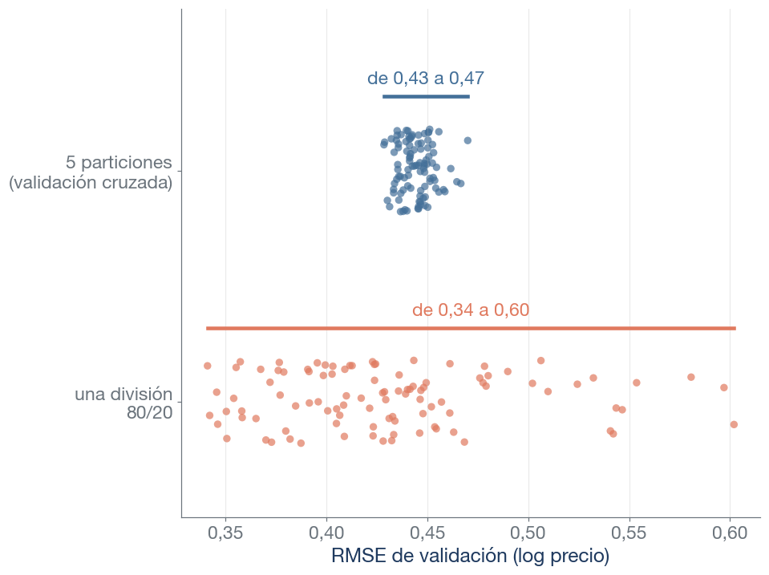
Técnicas Avanzadas de Predicción en Negocios
La semana pasada elegimos entre tres familias con validación cruzada: los mismos 300 anuncios, repartidos en 5 particiones con la semilla 42.
| Familia | Error de validación | ± error típico | Coeficientes no nulos |
|---|---|---|---|
| Ridge | 0,439 | 0,022 | 73 |
| Lasso | 0,422 | 0,014 | 4 |
| Elastic Net | 0,422 | 0,016 | 5 |
Repetimos la validación cruzada con otras 30 semillas, es decir, con otros repartos de los mismos 300 anuncios. ¿En cuántas gana Elastic Net?
El ganador depende de cómo se repartan los anuncios: la diferencia entre Lasso y Elastic Net es menor que la variación que introduce la partición.
Las reglas de este bloque sirven para medir y comparar todos los modelos del curso.

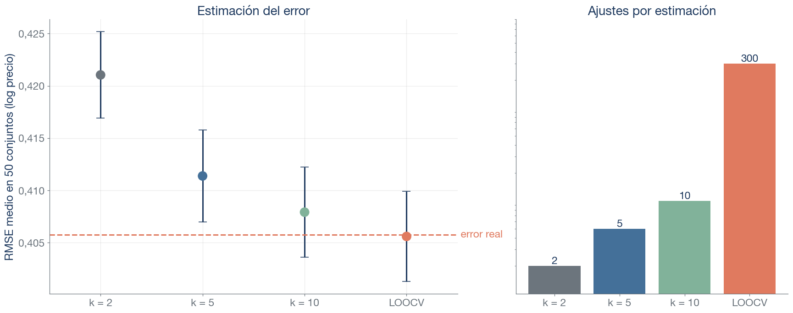
Error real: el de cada modelo en 1331 anuncios no utilizados en ningún ajuste. Con k = 2 cada modelo se entrena con la mitad de los anuncios y la estimación sale pesimista; de k = 5 en adelante apenas cambia, y LOOCV exige 300 ajustes.
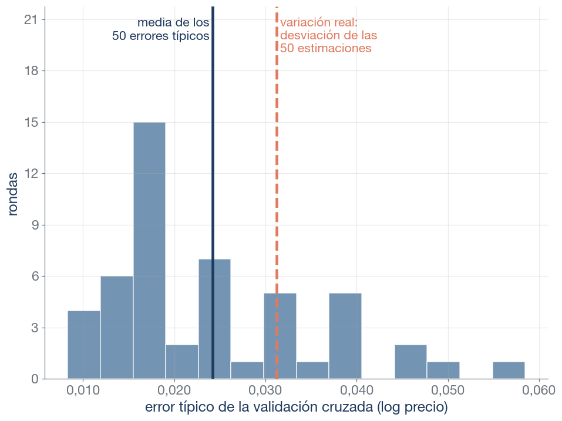
La media de los errores típicos (0,024) queda por debajo de la variación real (0,031): el error típico es orientativo y algo optimista.
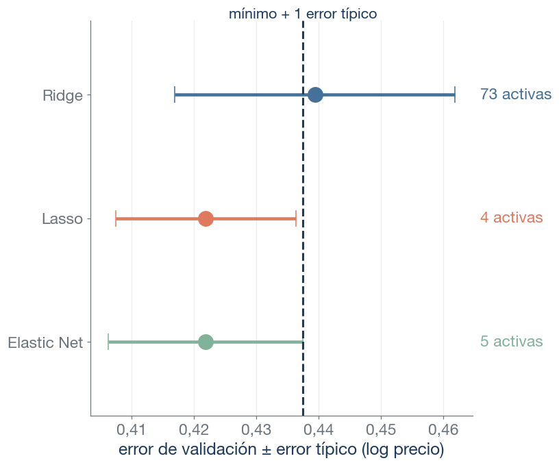
Usamos un criterio de mínima complejidad (también principio de economía, de parsimonia o navaja de Ockham).
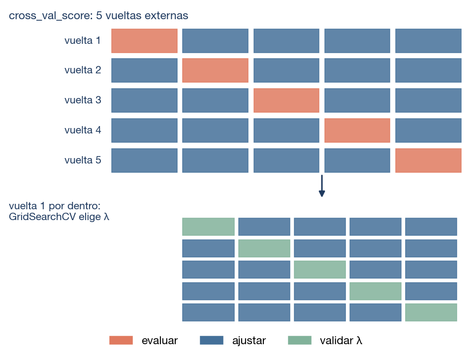
cross_val_score(GridSearchCV(...), X, y, cv=5), con X e y los datos de entrenamiento. En cada vuelta externa:
GridSearchCV elige λ con validación cruzada interna en las otras cuatro;Ninguna observación interviene en la elección de λ de la vuelta en la que sirve para evaluar. El resultado son cinco errores externos: estiman el error de elegir y ajustar.
Hemos elegido Elastic Net entre 125 configuraciones con validación cruzada. El cliente pregunta qué error puede esperar con anuncios nuevos.
¿Qué cifra damos? ¿El mínimo de la validación cruzada (best_score_), la validación cruzada anidada o el error en el test?
booking).Usamos el logit que ya conocéis: predice una probabilidad por anuncio. En el tema 3 lo veremos como GLM.
La valoración media es uno de los requisitos de la plataforma para obtener la insignia. ¿Es legítimo usarla como predictor?
Sí, si está disponible cuando se predice: en otra plataforma la valoración es visible. El modelo recupera en parte la regla de la plataforma; la asociación es por construcción. Para anticipar quién obtendrá la insignia habría que predecir con datos anteriores.
Fuente: Inside Airbnb, Valencia (listados.csv). Misma población y división que la semana 2; se excluyen 271 anuncios sin dato de superanfitrión. Entrenamiento: 5136; test: 2199.
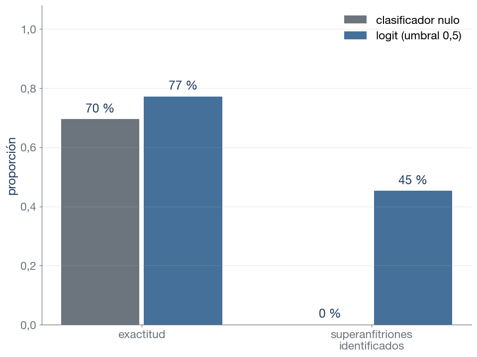
DummyClassifier): predice siempre la clase más frecuente, «no es superanfitrión».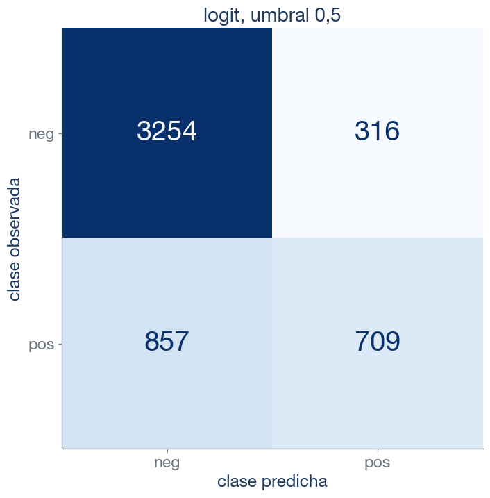
De los 1566 superanfitriones, el logit identifica 709 (el 45 %). De sus 1173 errores, 857 son falsos negativos y 316, falsos positivos: la exactitud los cuenta juntos.
Fórmulas
\[\text{precisión}=\frac{VP}{VP+FP}\qquad \text{sensibilidad}=\frac{VP}{VP+FN}\]
\[\text{especificidad}=\frac{VN}{VN+FP}\qquad \text{exactitud}=\frac{VP+VN}{n}\]
\[F_1=\frac{2}{\frac{1}{\text{precisión}}+\frac{1}{\text{sensibilidad}}}=\frac{2\,VP}{2\,VP+FP+FN}\]
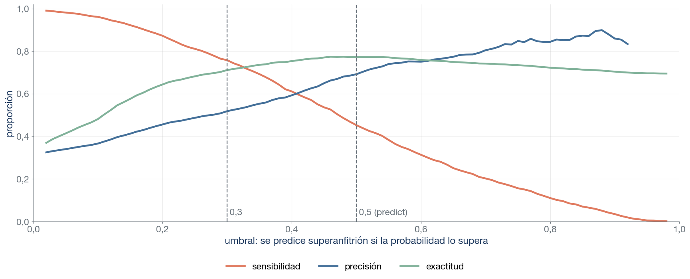
El umbral es una decisión: bajarlo identifica más superanfitriones a costa de más falsos positivos.
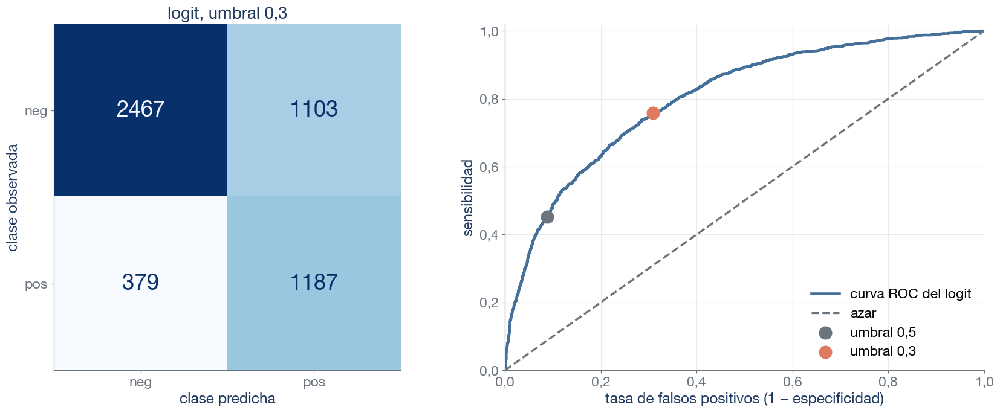
Con umbral 0,3, el logit identifica 1187 superanfitriones (709 con 0,5) y comete 1103 falsos positivos (316 con 0,5). Cada umbral es un punto de la curva; al bajarlo, el punto sube por ella.
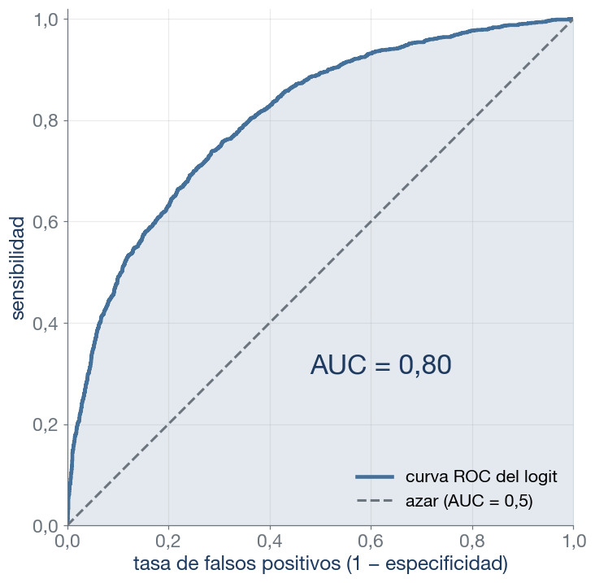
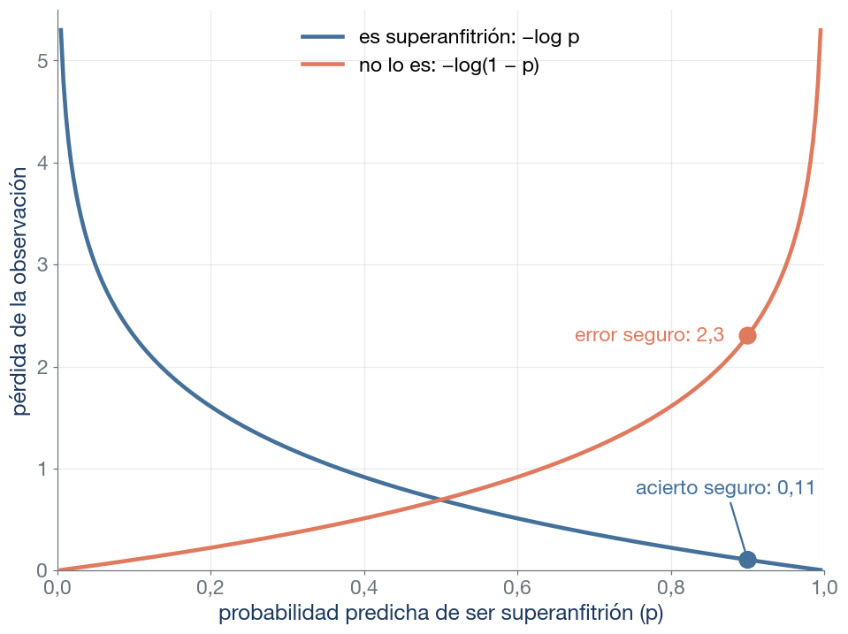
Pérdida logarítmica o entropía cruzada
\[-\frac1n\sum_i\big[y_i\log\hat p_i+(1-y_i)\log(1-\hat p_i)\big]\]
Menor es mejor: nulo (siempre la prevalencia) 0,615; logit 0,491. Un error con probabilidad 0,99 pesa tanto como 44 aciertos con probabilidad 0,9.
| Métrica | Pregunta que responde | Valor de scoring |
|---|---|---|
| Exactitud | ¿Qué proporción clasifica bien? | "accuracy" |
| Precisión | De los señalados, ¿cuántos son positivos? | "precision" |
| Sensibilidad | De los positivos, ¿cuántos señala? | "recall" |
| F1 | ¿Son altas a la vez precisión y sensibilidad? | "f1" |
| AUC | ¿Ordena a los positivos por encima de los negativos? | "roc_auc" |
| Log-loss | ¿Son buenas las probabilidades? | "neg_log_loss" |
| Precisión media (AP) | ¿Ordena bien cuando los positivos escasean? | "average_precision" |
La métrica forma parte de la regla de decisión y se fija antes de validar. Con un clasificador, las particiones son siempre estratificadas: GridSearchCV(cv=5) ya lo hace.
Cambiamos el logit por otro modelo y el AUC sube de 0,80 a 0,85. ¿Tiene que subir también la exactitud con el umbral 0,5?
No necesariamente. El AUC resume el orden de las probabilidades en todos los umbrales. La exactitud con umbral 0,5 solo cambia si algún anuncio cruza ese umbral. Si la mejora reordena anuncios lejos del umbral (por ejemplo, entre probabilidades de 0,05 y 0,2), el AUC sube y la exactitud con 0,5 no cambia.
Simulación con la misma capacidad de separar las clases (AUC ≈ 0,80) y tres prevalencias; umbral 0,5.
| Positivos | Exactitud del nulo | Exactitud del modelo | Señaladas | Precisión | Sensibilidad |
|---|---|---|---|---|---|
| 30 % | 69,9 % | 77,0 % | 40 595 | 67 % | 45,5 % |
| 5 % | 95,0 % | 95,1 % | 563 | 61 % | 3,5 % |
| 1 % | 99,0 % | 99,0 % | 3 | — | 0,1 % |
Señaladas: observaciones con probabilidad de al menos 0,5. (con menos de 30 señaladas, la precisión no es fiable).
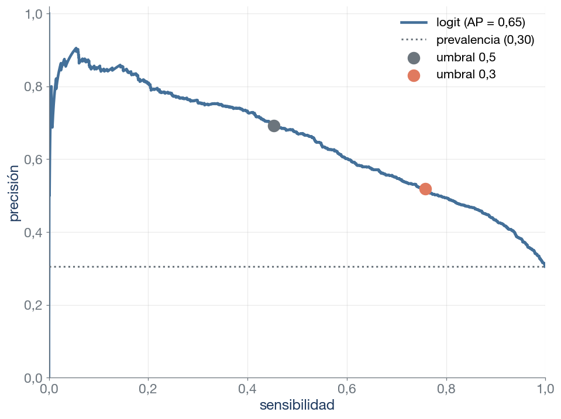
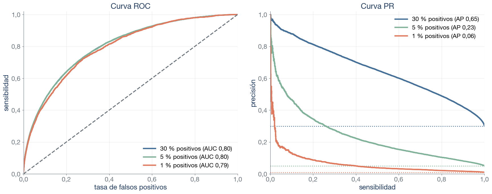
Misma simulación que la tabla anterior; AUC en la leyenda de la izquierda. Con un 1 % de positivos, la precisión media cae a 0,06: un falso positivo por cada cien negativos ya iguala el número de positivos.
Punto de partida con cualquier clasificador: particiones estratificadas (stratify=y, StratifiedKFold), para que todas tengan la misma prevalencia.
LogisticRegression(class_weight="balanced").TunedThresholdClassifierCV lo busca por validación cruzada.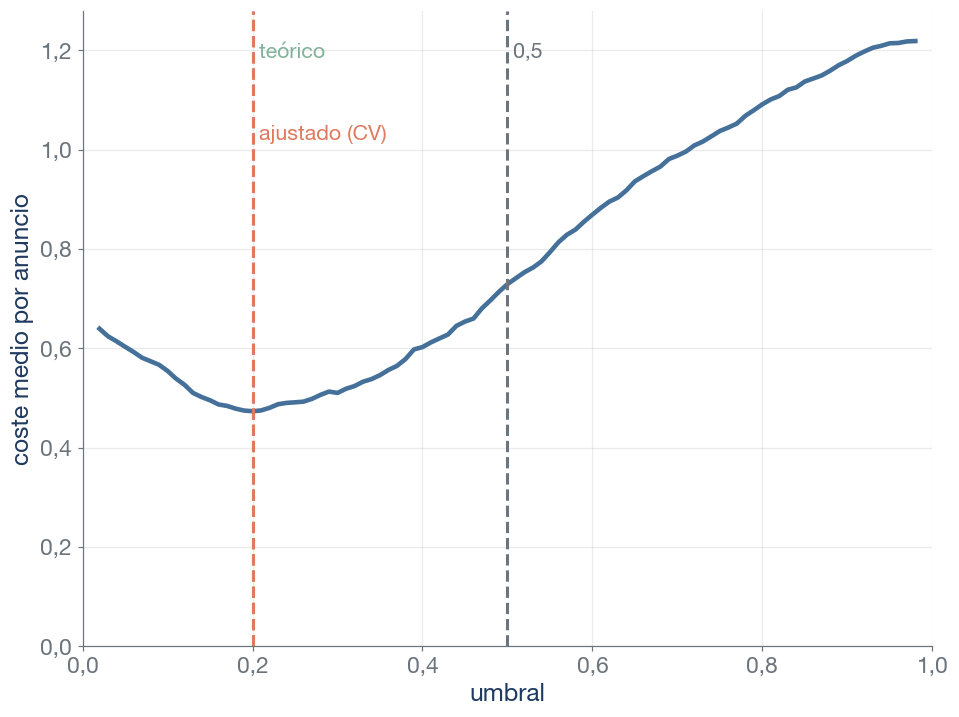
TunedThresholdClassifierCV elige 0,20: coste medio 0,47 por anuncio, frente a 0,73 con 0,5.class_weight cambia los pesos de estimación
class_weight="balanced" multiplica la pérdida de cada observación por un peso: cada superanfitrión pesa 1,64 y cada anuncio del resto, 0,72.Log-loss ponderada
\[-\frac1n\sum_i w_{y_i}\big[y_i\log\hat p_i+(1-y_i)\log(1-\hat p_i)\big]\]
\[w_1=\frac{n}{2n_1}\qquad w_0=\frac{n}{2n_0}\]
class_weight?
Con class_weight="balanced", el logit da más peso a los superanfitriones al estimar. ¿Siguen siendo sus probabilidades una buena estimación de la proporción de superanfitriones?
No. La probabilidad media predicha pasa de 31 % a 45 %, frente a una prevalencia de 30 %, y la log-loss empeora de 0,491 a 0,548. Ponderar se parece a bajar el umbral; si necesitamos probabilidades (para costes o para priorizar), es mejor mover el umbral.
La métrica se elige según el problema de negocio y antes de validar.
Cuatro clasificadores ajustados con los 5136 anuncios de entrenamiento y evaluados una sola vez en los 2199 del test.
| Clasificador | Exactitud | Precisión | Sensibilidad | AUC | Log-loss | Coste medio |
|---|---|---|---|---|---|---|
| Nulo | 69 % | — | 0 % | 0,50 | 0,619 | 1,24 |
| Logit, umbral 0,5 | 77 % | 69 % | 45 % | 0,82 | 0,479 | 0,74 |
| Logit ponderado | 74 % | 56 % | 78 % | 0,82 | 0,531 | 0,46 |
| Logit, umbral 0,20 (costes) | 65 % | 47 % | 88 % | 0,82 | 0,479 | 0,46 |
¿Qué clasificador elegiríais (a) si la gestora solo puede contactar a pocos anfitriones y cada contacto fallido es caro, y (b) si un falso negativo cuesta 4 veces más que un falso positivo?
| Concepto | Significado | scikit-learn |
|---|---|---|
| Conjunto de entrenamiento y test | Se estima con el primero; el test se reserva y se consulta una vez, con la decisión tomada | train_test_split |
| División entrenamiento/validación | Reparto único del entrenamiento: se ajusta con una parte y se mide el error en la otra | ShuffleSplit |
| Validación cruzada | Las observaciones se reparten en k particiones; cada una valida una vez y se promedian los k errores | KFold, cross_val_score |
| Partición (fold) | Cada una de las k partes de la validación cruzada | n_splits=k |
| LOOCV | Validación cruzada con k = n: cada observación valida sola | LeaveOneOut |
| Error típico de la validación cruzada | Desviación de los k errores dividida por √k; orientativo y algo optimista | cv_results_ |
| Regla del error típico | Entre los modelos a menos de un error típico del mínimo, el más sencillo | — |
| Validación cruzada anidada | Un bucle externo evalúa y otro interno elige los hiperparámetros | cross_val_score(GridSearchCV(...)) |
| Estratificar | Particiones con la misma proporción de cada clase | stratify=y, StratifiedKFold |
| Predicción de validación cruzada | La de cada observación cuando su partición hace de validación; una por observación | cross_val_predict |
| Concepto | Significado | scikit-learn |
|---|---|---|
| Clasificador nulo (dummy) | Predice siempre la clase más frecuente (o la prevalencia como probabilidad) | DummyClassifier |
| Umbral | Probabilidad a partir de la cual se predice la clase positiva | predict usa 0,5 |
| Matriz de confusión | Recuentos de VP, FP (error tipo I), FN (error tipo II) y VN | confusion_matrix |
| Exactitud | Proporción de observaciones bien clasificadas: (VP + VN)/n | "accuracy" |
| Precisión | De las señaladas como positivas, proporción que lo es: VP/(VP + FP) | "precision" |
| Sensibilidad (recall) | De las positivas, proporción señalada: VP/(VP + FN) | "recall" |
| Especificidad | De las negativas, proporción descartada: VN/(VN + FP) | — |
| F1 | Media armónica de precisión y sensibilidad: 2VP/(2VP + FP + FN) | "f1" |
| Prevalencia | Proporción de observaciones de la clase positiva | y.mean() |
| Curva ROC | Sensibilidad frente a tasa de falsos positivos, para todos los umbrales | roc_curve |
| AUC | Área bajo la curva ROC: probabilidad de ordenar bien un par positivo-negativo | "roc_auc" |
| Log-loss (entropía cruzada) | Media de −log de la probabilidad asignada a la clase observada | "neg_log_loss" |
| Curva PR | Precisión frente a sensibilidad, para todos los umbrales | precision_recall_curve |
| Precisión media (AP) | Resumen de la curva PR; su referencia es la prevalencia | "average_precision" |
| Pesos de estimación | Multiplican la pérdida de cada observación según su clase | class_weight="balanced" |
| Umbral por costes | Umbral que minimiza el coste esperado: C_FP/(C_FP + C_FN) | TunedThresholdClassifierCV |
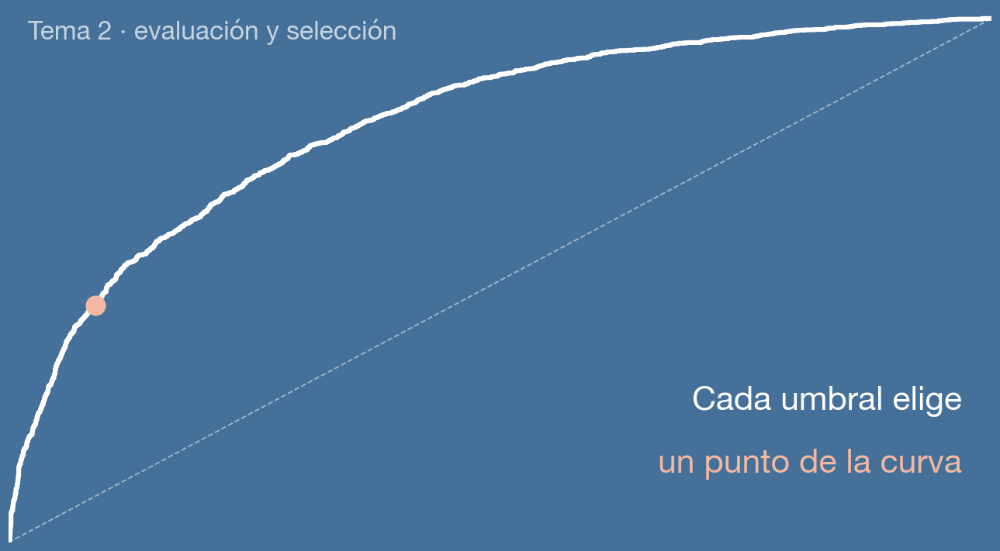